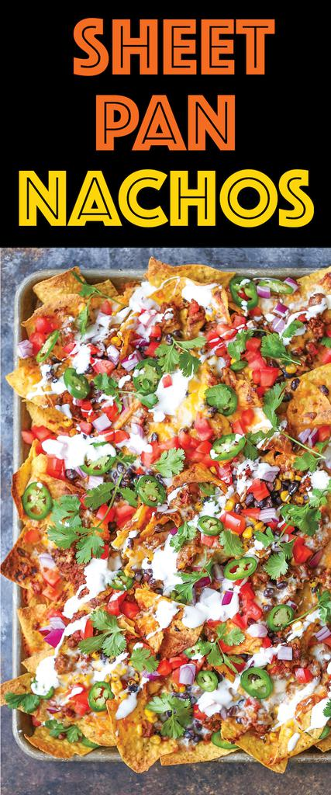

Sheet Pan Nachos Recipe

Description
One of my favorite foods and it's easy to make. For a bonus tip, put down tinfoil on the baking sheet.
Ingredients
- 1 lb Ground beefo with taco seasoning
- 1 bag Tortilla chips
- 2 diced Roma tomatoes
- 2 thinly sliced Jalapenos
- 2 Tbsp Sour cream
- 1 jar Yellow queso con salsa dip
- 1 bag Shredded lettuce
- 1 jar Taco Bell hot sauce
Steps
- Preheat oven to 400 degrees F. Lightly oil a baking sheet or coat with nonstick spray.
- Place tortilla chips in a single layer onto the prepared baking sheet. Top with ground beef mixture, cheese, tomato.
- Place into oven and bake until heated through and the cheeses have melted, about 5-6 minutes.
- Serve immediately, topped with lettuce, jalapeno, sour cream, and Taco Bell sauce.